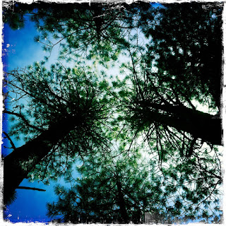
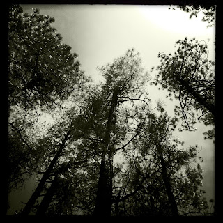
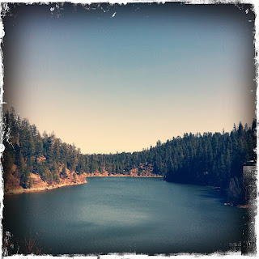
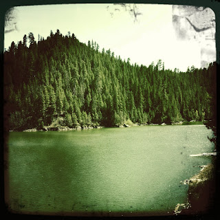

Recovered weblog entry
Nature and other hidden things




Climb the mountains and get their good tidings. Nature's peace will flow into you as sunshine flows into trees. The winds will blow their own freshness into you, and the storms their energy, while cares will drop away from you like the leaves of Autumn. - John Muir